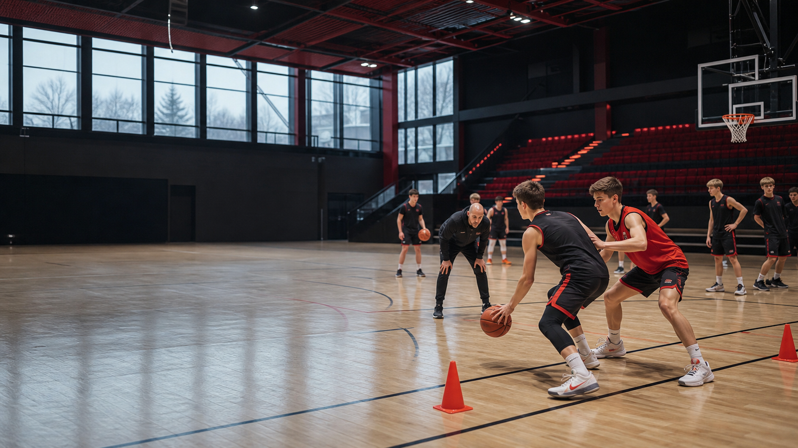

Synlighet på drakt og nettside
For bedrifter som vil være tett på klubbens aktivitet gjennom hele sesongen.
Siden er klar for reelle samarbeidspartnere, pakker og kontaktperson. Inntil klubben bekrefter navn, bruker vi tydelige sponsorplasser.
For bedrifter som vil være tett på klubbens aktivitet gjennom hele sesongen.
Bidra til utstyr, turneringer og et bedre treningsmiljø for barn og ungdom.
Lavere terskel for bedrifter og privatpersoner som vil hjelpe klubben fremover.
En institusjonell klubbside bør vise hva partnerne faktisk bidrar til: aktivitet, inkludering, utstyr og rekruttering. Det gir sponsorene bedre verdi og klubben mer tillit.
